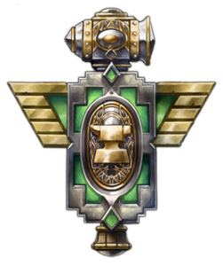
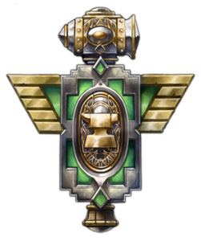
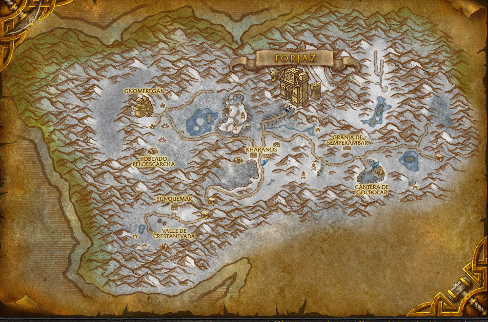

Forjaz está ubicado hacia la parte más septentrional de Dun Morogh, país con los picos más altos del reino de Khaz Modan ("Montaña de Khaz" en idioma enánico), continente ubicado justo en medio los Reinos del Este en el videojuego World of Warcraft.
MAPA DEL PAÍS DE DUN MOROGH
